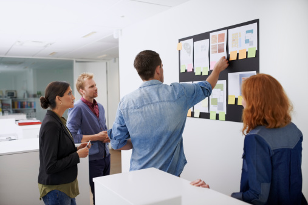
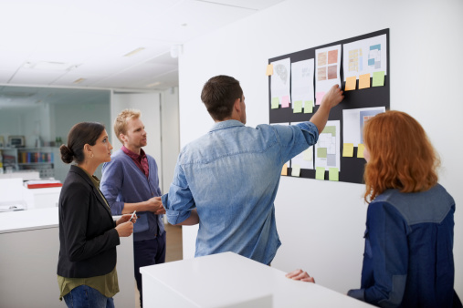

「我們都有那種，能讓社會更好的力量。」

「我們致力於降低政治參與的門檻，讓資訊更清楚、更簡單、更容易了解。」

「能改變社會的，不是一個超級英雄，而是一群有行動力的公民。」
「沃草」，是公民社會的肥沃草原；「watch out」則代表「注意」和「向外關注」。
我們相信台灣可以更好；而讓台灣更好的力量來自於更多主動參與、向外關注的公民。
我們相信許多人對台灣充滿了滿滿的愛，也希望能夠做點什麼；只是也許沒有太多時間、或不知道可以如何參與。
我們想做的事情很簡單：就是為大家打造有用的工具，讓每個人可以更有力量，去關注我們所愛的台灣。
立院花了許多錢維護了 IVOD 視訊系統，卻因為冗長與門檻太高而缺乏利用。國會無雙透過由專門的編輯與主播進行直播，以及線上互動的平台，使得觀看 IVOD 更加有趣；同時，我們也將每日議事的重要結果，整理成戰報，讓資訊簡單且容易理解。
匯流各不同面向的報導，邀請全民參與，一起來還原真相、打擊錯誤、監督倫理，跳脫政黨既定立場，並消除資訊不對稱。當全民注視著媒體生態，我們可能改變它，促進正向循環。
就像企業與公司一樣，公民運動也是很欠缺人手的。我們發現，社運團體中人力的重複與不足，不是因為公民冷漠，而是因為不得其門而入。公民人力銀行，要提供公民團體、參與者與社會資本之間，更即時的媒合平台。
要參與社會，必須要有多元視野和知識份子技能。我們希望，透過提供與整理不同形式的線上課程、線上知識庫，除了能夠讓公民了解如何去表達意見、溝通說服、進行辯論，也能夠進能激發公民去找出解決問題的方法和培養思考的能力。
立院花了許多錢維護了 IVOD 視訊系統，卻因為冗長與門檻太高而缺乏利用。國會無雙透過由專門的編輯與主播進行直播，以及線上互動的平台，使得觀看 IVOD 更加有趣；同時，我們也將每日議事的重要結果，整理成戰報，讓資訊簡單且容易理解。
就像企業與公司一樣，公民運動也是很欠缺人手的。我們發現，社運團體中人力的重複與不足，不是因為公民冷漠，而是因為不得其門而入。公民人力銀行，要提供公民團體、參與者與社會資本之間，更即時的媒合平台。
 

我們希望，加入我們的不只是那些原本就熱衷於公民運動的人。而是讓更多剛開始接觸社會與政治議題的人，也願意和我們一起參與，我們期望它是一個全民的運動。
2013年8月3日，在凱道上的公民銀十字告訴我們台灣人並不冷漠。我們意識到在公民社會裡的能力與責任，我們願意挺身而出，為公義站出來，也為自己站出來。
以前我們都太習慣只關注自己身邊的事，這是有問題的，因為公民社會，我們就在裡面，當作沒看到、不去看的話，吃虧的只會是我們自己。所以說，要關注社會，要往外面看。要 Watch out。
我們的團隊非常年輕，但卻有著共同的目標與裡想。我們用同理心與單純的思考，想辦法讓『參與』這件事情變得有趣，讓人民平常看不到、或是懶得管的事情，變得簡單。
常有人說，我們只是社會上小螺絲釘，安安分分過自己的生活就好。也有人說，台灣是座鬼島，無論做什麼，都無法改變現實。但我們也許都忘了，我們還有那種，能讓社會更好的力量。
沃草有限公司 Watchout, Co.
地址：100 台北市中正區懷寧街92號7樓
電話：02-2361-7588
電子郵件：info@watchout.tw
網站：http://watchout.tw